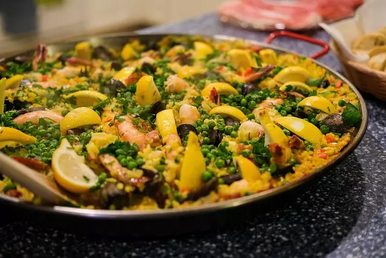

Paella española
Aprende a cocinar una auténtica paella española, llena de sabores tradicionales y aromas irresistibles. Sigue nuestra receta paso a paso y disfruta de un festín culinario inolvidable.
Disfruta del auténtico sabor de España con nuestra receta de paella. Sigue nuestros simples pasos para crear este delicioso plato con arroz, mariscos y sabores exquisitos. Sorprende a tus invitados con un toque español en tu mesa y vive una experiencia culinaria inolvidable. ¡Prepárate para viajar a través de los sabores mediterráneos con nuestra paella casera!
Ingredientes
- 2 cucharadas de aceite de oliva
- 1 cebolla picada
- 1 pimiento rojo picado
- 2 dientes de ajo picados
- 1 tomate picado
- 1 cucharadita de pimentón dulce
- 1/2 cucharadita de azafrán en hebras
- 2 tazas de arroz de grano corto
- 4 tazas de caldo de pescado o de pollo
- 1 taza de guisantes
- 12 langostinos
- 12 mejillones
- 1 limón en rodajas para decorar
- Sal y pimienta al gusto
Paso a paso
- En una paellera grande, calienta el aceite de oliva a fuego medio.
- Agrega la cebolla y el pimiento rojo, y cocina hasta que estén tiernos.
- Incorpora el ajo y el tomate picado, y sofríe por unos minutos hasta que el tomate se deshaga.
- Agrega el pimentón dulce y el azafrán en hebras, mezcla bien para liberar los sabores.
- Incorpora el arroz de grano corto y revuelve para que se impregne con el aceite y las especias.
- Vierte el caldo de pescado o pollo caliente en la paellera y mezcla suavemente.
- Agrega los guisantes, los langostinos y los mejillones acomodándolos sobre el arroz.
- Cocina a fuego medio-bajo durante unos 20 minutos o hasta que el arroz esté tierno y el caldo se haya absorbido.
- Retira la paellera del fuego, cubre con papel de aluminio y deja reposar por unos minutos.
- Decora con rodajas de limón antes de servir.
- Sirve la paella caliente y disfruta de este clásico plato español.